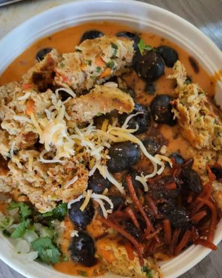
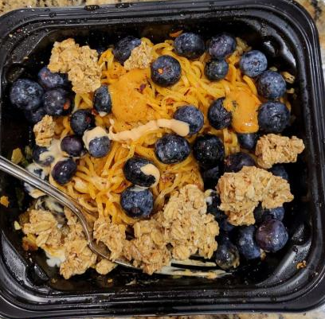

Ameer's World Class Dishes
Superfood Tomato Soup

Amazing soup filled with healthy superfoods that is sure to make any food connoisseur jump for joy.
Hearty Fiesta Sandwich

Oriental dish of legends with a varied history. It's like a party in your mouth!
Crunchy Blueberry Yakisoba

A wild card of a dish that defies tradition in order to go for a fresh, new taste.